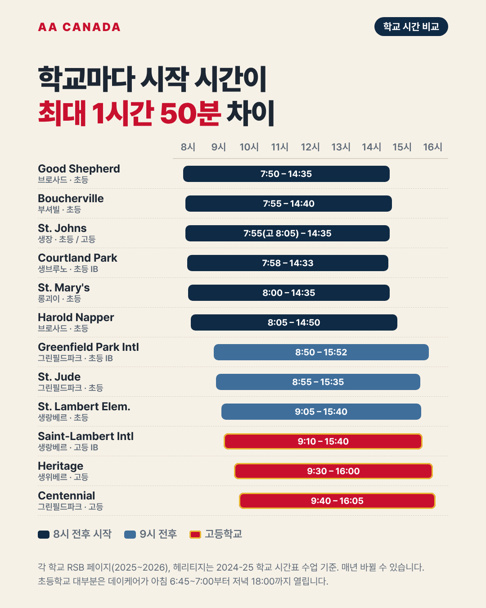

기준일 2026-10-21 · AA Canada 정리 학교별 페이지에서 공통으로 링크하는 문서입니다. 숫자와 규정은 출처의 날짜를 확인하고, 매년 8월에 다시 점검합니다.
| 항목 | 내용 |
|---|---|
| 정식 이름 | Riverside School Board (RSB, 불어 Commission scolaire Riverside) |
| 성격 | 퀘벡주 영어 공립 교육청 (1998년 7월 1일 출범) |
| 지역 | 몬트리올 남쪽 사우스쇼어(Montérégie). 소렐에서 미국 국경까지 115개 이상 지자체, 약 7,500km² |
| 규모 | 학생 14,200명 이상 (2024-25 연차보고서) |
| 학교 | 초등학교 19곳, 고등학교 4곳, 성인교육·직업훈련 센터 5곳 (2026-27 브로슈어) |
| 슬로건 | Réussir dans les deux langues! / Success in both languages! (영어와 불어 둘 다 잘하기) |
| 본부 | 7525 chemin de Chambly, Saint-Hubert (Longueuil) · 450-672-4010 |
| 자랑 | 교육청이 스스로 "불어 이머전(French Immersion)의 발상지"라고 소개 |
| 출처 | 내용 |
|---|---|
| 2026-27 브로슈어 | 졸업·자격 취득률 88.5%, Montérégie 1위, 퀘벡 72개 교육청 중 꾸준히 상위 5위권 (교육부 최신 자료 기준이라고 표기) |
| 2022-23 연차보고서 | 7년 졸업·자격 취득률 90.7% (퀘벡 공립 평균 81.6%) |
| 2010 입학 코호트 | 88.3%, 72개 교육청 중 3위 |
콘텐츠에는 "브로슈어 기준 88.5%"처럼 출처를 꼭 붙입니다.
퀘벡은 법(불어헌장 Charter of the French Language)으로 영어 공립학교에 다닐 수 있는 학생을 제한합니다. 한국 가족은 아래 두 경우 중 하나입니다.
| 경우 | 영어학교 가능 여부 | 핵심 |
|---|---|---|
| 조기유학 (RISE 국제학생) | 가능 | RISE가 입학·영어교육 자격 절차를 진행. 학사일정표에 "영어교육 자격 승인 후 개강" 조건이 있고, 2026 가을에는 대부분 도착 1주 안에 승인 |
| 부모가 학생비자·워크퍼밋으로 체류 | 가능 (임시 허가) | 부모 체류 허가에 연동된 임시 허가. 최대 3년, 갱신 불가 (2022년 6월 Bill 96 이후) |
꼭 알아야 할 3가지 (부모 동반 가족) 1. 임시 허가는 최대 3년이고 갱신되지 않습니다. 그 뒤에는 불어 공립학교나 정부 지원을 받지 않는 사립 영어학교로 옮겨야 합니다. 2. CSQ(퀘벡 선발증명서)를 받거나 영주권을 신청하면 임시 체류 자격으로 갱신할 수 없습니다. 3. 임시 허가로 다닌 기간이 영구 영어교육 자격으로 이어지는지는 확인되지 않았습니다. 상담에서 단정하지 않습니다.
그래서 AA Canada는 가족 상담 때 "3년 안에 무엇을 할지"를 먼저 설계합니다. 예: 초등 고학년~중1에 영어학교 3년 → 그 사이 불어 실력 쌓기 → 이후 불어학교·사립 등 진로 결정.
출처: RSB "Temporary Stay in Québec"(rsb.qc.ca/?p=580), 퀘벡 규정 C-11 r.7, QESBA·EMSB 자격 안내, Éducaloi, CTV(2022) Bill 96 사례 기사
| 경우 | 학비 |
|---|---|
| 조기유학 (부모가 캐나다에 없음) | 국제학생 학비 납부. 2027-28 1년 수업료 $16,177 + 홈스테이·행정비 등, 총액 예시 약 $32,000 (CAQ 포함, RSB 학생용 학비표) |
| 부모가 워크퍼밋 소지 (6개월 이상 유효) | 퀘벡 교육부 국제학생 면제 가이드상 면제 대상 |
| 부모가 학생비자 소지 | 여러 교육청(CSS) 요약에 면제 대상으로 나오지만 부모의 과정 종류에 따라 달라질 수 있음. RISE에 서면으로 확인 중 |
학교 페이지·블로그·카페에서 "무상교육"이라는 표현은 부모 비자에 따라 달라진다는 문장과 함께만 씁니다.
출처: 퀘벡 교육부 Guide-exemptions-etudiants-internationaux (2023년 7월부터 적용), CSS Portneuf·CSS des Draveurs 안내, Bill 144(2018)
| 항목 | 날짜 |
|---|---|
| 개학 | 2026-09-01 |
| 1학기 성적 마감 | 2026-11-06 |
| 2학기 성적 마감 | 2027-01-29 (고등) / 2027-02-12 (초등) |
| 3학기 종료 | 2027-06-23 |
| 교사 연수일(학생 등교 없음) | 교육청 공통 17일 + 학교 지정 1일 + 조건부 2일 |
| 겨울방학·봄방학(3월) | 확인 필요 (달력 PDF 원본에서 옮길 것) |
RISE 국제학생 일정(입국·개강·출국)은 이 달력과 별도로 RISE 학사일정표를 따릅니다. 2027-28 1년 과정은 2027-09-08 개강입니다.
학교마다 시작 시간이 1시간 이상 차이 납니다. 부모 출근, 데이케어 이용 여부와 같이 보세요.
| 학교 | 지역 | 수업 시간 | 데이케어(service de garde) |
|---|---|---|---|
| Good Shepherd | Brossard | 7:50~14:35 | 7:00~7:50, 14:35~18:00 |
| Harold Napper | Brossard | 8:05~14:50 | 6:45~8:05, 14:50~18:00 |
| St. Mary's | Longueuil | 8:00~14:35 | 7:00~8:00, 14:35~18:00 |
| Royal Charles | Saint-Hubert | 7:55~14:30 | 6:45~8:00, 14:25~18:00 |
| St. Jude | Greenfield Park | 8:55~15:35 | 7:00~18:00 |
| Greenfield Park Intl | Greenfield Park | 8:50~15:52 | 7:00~9:00, 16:00~18:00 |
| St. Lambert Elementary | Saint-Lambert | 9:05~15:40 | 7:00~8:55, 15:30~18:00 |
| Terry Fox | Saint-Hubert | 9:05~15:45 | 6:30~8:50, 15:45~18:00 |
| Courtland Park Intl | Saint-Bruno | 7:58~14:33 | – |
| Boucherville Elementary | Boucherville | 7:55~14:40 | – |
| St. Johns (초등) | Saint-Jean-sur-Richelieu | 7:55~14:35 | – |
| St. Johns (고등) | Saint-Jean-sur-Richelieu | 8:05~14:35 | – |
| Saint-Lambert International HS | Saint-Lambert | 9:10~15:40 | – |
| Centennial Regional HS | Greenfield Park | 9:40~16:05 | – |
출처: 각 학교 RSB 페이지(2025~2026 갱신분). 일부 페이지는 옛 시간과 새 시간이 함께 남아 있어 매년 8월 학교에 재확인합니다.
| 구분 | 버스 제공 조건 (학교까지 걷는 거리) | 정류장까지 최대 걷는 거리 |
|---|---|---|
| 유치원 | 0.8km 이상 | 0.4km |
| 초등 | 1.6km 이상 | 0.8km |
| 고등 | 2.0km 이상 | 0.8km |
출처: RSB Policy on Transportation(2020 승인, 2024-06-18 개정), Transportation Procedural Guidelines
| 과정 | 나이 |
|---|---|
| 4세 유치원(K4) | 9월 30일 전 만 4세 (일부 학교만 운영) |
| 유치원(K5) | 9월 30일 전 만 5세 |
| 1학년 | 9월 30일 전 만 6세 |
한국 학년과 다릅니다. 예: 2020년 10월생은 2026-27에 K5가 아니라 K4 대상. 상담 때 생년월일로 바로 계산해 드립니다.
| 용어 | 뜻 |
|---|---|
| English Program | 영어로 수업, 불어는 제2외국어(FSL) 과목. 학교마다 불어 비중 15~30% |
| French Immersion | 영어 교육청 안의 불어 몰입반. 저학년에 불어 비중이 높고 고학년에 영어가 늘어나는 구조가 일반적 |
| Bilingual (50/50) | 영어·불어 반반 |
| IB PYP / MYP | 국제바칼로레아 초등(PYP)·중등(MYP) 프로그램 |
| K4 / Passe-Partout | 4세 유치원 / 4세 아이와 부모가 함께하는 퀘벡 준비 프로그램 |
| Cycle 1·2·3 | 초등 1~2학년 / 3~4학년 / 5~6학년 |
| Secondary I~V | 중1~고2에 해당 (퀘벡 고등학교는 5년, 이후 CEGEP) |
| CLC | Community Learning Centre. 점심·방과후 활동, 지역 연계 |
조기유학생에게 맞는 반: 영어 실력을 늘리러 오는 학생은 대부분 English Program이 맞습니다. 불어 이머전은 불어 비중이 높으므로, 불어를 배우려는 가정이 아니면 권하지 않습니다.
Riverside School Board 폴더)